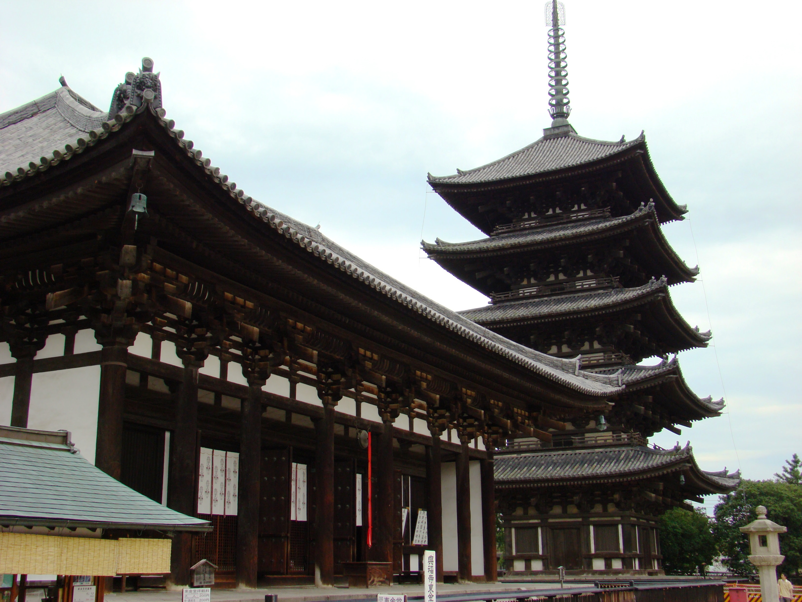

Кофуку-дзі (яп. 興福寺 Ко:фуку-дзі) - древній буддійський храм в Японії в місті Нара. Храм
охороняється як об'єкт Світової спадщини ЮНЕСКО.

- Цей храм є головним храмом школи Хоссо (відповідної індійської філософської школи Йогачара,
засновник школи - Досё). У храмі триває традиція Куся-сарвастівади, сконцентрована на вивченні
трактату Васубандху «Абхідхармакоша». Храм входить в число семи найбільших храмів півдня. Храм
був заснований в місті Кіото, але переміщений в Нару в 710 році.
- Будівлі храмового комплексу мають статусами культурної спадщини - національних скарбів і
важливої культурної власності. Вищим статусом національного скарбу відзначені північний
восьмикутний павільйон Хокуендо (найстаріша будівля комплексу, побудовано в 721 році і
реконструйовано в 1210 році), східний золотий павільйон Токондо, триярусна пагода Сандзо-но-то
(збереглася з 1143 року), а також п'ятиярусна пагода Годзю-но щось (відновлена в 1426 році,
одне з найвищих будівель Нари, висота 50 метрів). Важливою культурною власністю є банний
будиночок Оюя (кінець XIV - початок XV століття), південний восьмикутний павільйон Нан'ендо (в
реконструкції 1741 року). У цьому павільйоні зберігаються статуї Чотирьох Небесних Королів -
захисників буддизму, також є скарбами нації.
-
В Японії перенесення будівель з одного місця на інше був цілком звичайним, хоч і трудомісткою
справою. Кофуку-дзі міняв місце розташування двічі. У 669 році в місті Ямасіна (сьогодні це
частина Кіото) його побудувала дружина високопоставленого вельможі з клану Фудзівара, щоб
молитися про одужання чоловіка. Уже в 672 році храм переїхав в першу японську столицю
Фудзівара-ке, а в 710 році він знову був перенесений в наступну столицю Хейдзьо-ке.
Крім самих будівель, до пам'яток Кофуку-дзі відносять скульптури, зроблені майстрами різних епох.
Однією з таких цінностей є бронзова голова Будди, яка була знайдена на території храму в 1937
році.